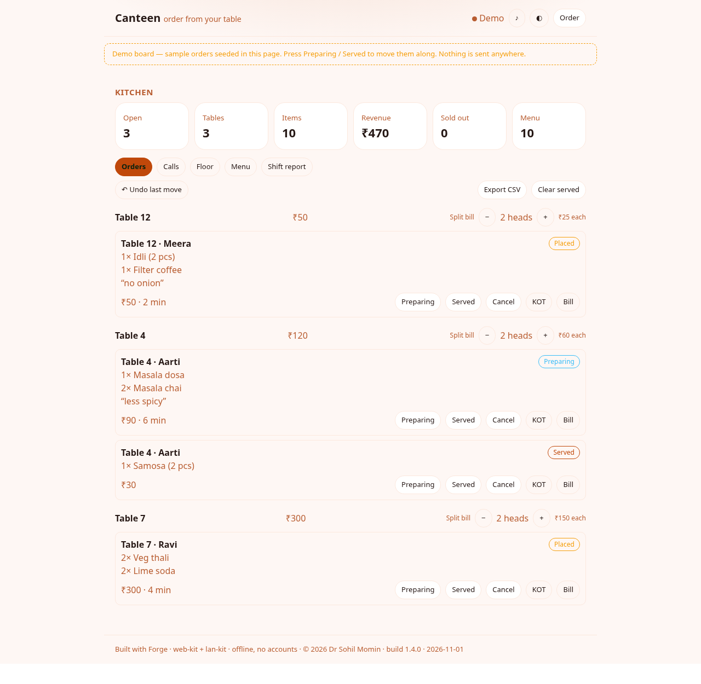

LAN · no internet · no accounts
One laptop hosts the canteen on the room's own Wi-Fi. Every phone on the network joins it, orders from its seat, and the kitchen watches each table move from placed to served — with no internet at any point.
This is the app itself in a frame — seeded with a shift's worth of orders, with no server behind it. Press the buttons: move an order along, open a table's cart, answer a waiter call, or add a dish to the menu.

Pick a table and a name, search or filter the menu by tag, add priced modifiers like “Elaichi +₹5”, and place it with a note. The cart survives a reload, and Show my bill gives you an itemised slip with a code the counter can read.
Orders arrive grouped by table — or as a floor of tiles you can tap — with the running bill and how long each has waited. Mark one preparing, served or cancelled, undo the last move, split a bill across heads, edit the menu with its stock counts, modifiers and serving windows, read the shift report on screen or as an A4 sheet, print a KOT, and export the day as CSV.
A tiny Node host serves the board itself, journals every message to a plain file, replays the shift to anyone who joins late or after a restart, and broadcasts over Server-Sent Events. --mirror keeps a second host in step, so the counter survives the laptop.
# on one laptop, Pi — anything with Node node host/room.js # it serves the board itself, prints the # address and draws a QR to scan: # http://192.168.1.20:8080 node host/room.js --pin 4821 node host/room.js --print 192.168.1.50:9100 node host/room.js --menu my-menu.json node host/room.js --mirror 192.168.1.21:8080
# then, on any phone on the same Wi-Fi: open http://192.168.1.20:8080 # or scan the code at /join, or use the # published board and paste the address # one device, no host at all open play/index.html?solo=1 # the whole mechanic, headless node test-node.js → 235 passed
The journal lives in .canteen/room-<room>.jsonl — one JSON object per message, so a restart replays the shift and a canteen never loses a bill to a power cut.
Every build comes from the same commit as this page, so the demo and the download can never disagree. The board itself is one page — nothing to install if you only want to order, and it installs to a home screen from the browser's own menu, with no app store in the way.